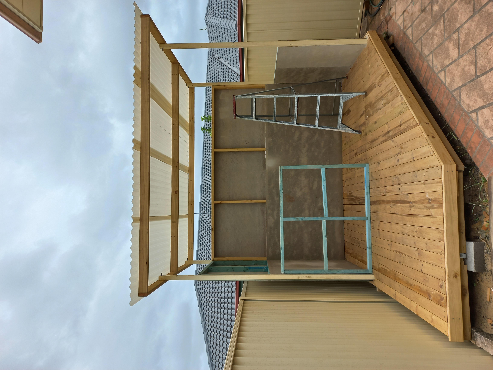

Completed Projects

Rubber Band Racer
This was a particularly in depth project that, although from an external perspective seemd simple, however within the design and development, it has developed a greater understanding of project design and development processes. Rubber band racer has inspired a wide range of competitive driven project ideas and heavy incorporation of CAD modelling and rapid prototyping processes, transferrable into a wide subject area range.
- 
Deck
Building a deck and working in the industry beyond school settings has increased skill sets that can be transferred into construction teaching as a vocational course offerred for seniors. This experience has provided great learning opportunities that will support students who seek employment as a trade worker in the construction industry.

Model Ship and Display Case (WIP)
Although designed using traditional woodworking processes and materials, this project is heavily focused on product design and consumerism via the medium of timber. With this idea as a premise to the project, understanding of why and how decisions made for products, becomes clearer and an appreciation for quality products is developed knowing the processes undertaken to get it to that refinement. Having a deeper understanding into the perspective of a product designer can further students, in particular at that senior level. This aspect of product design is applicable in all areas of TAS.